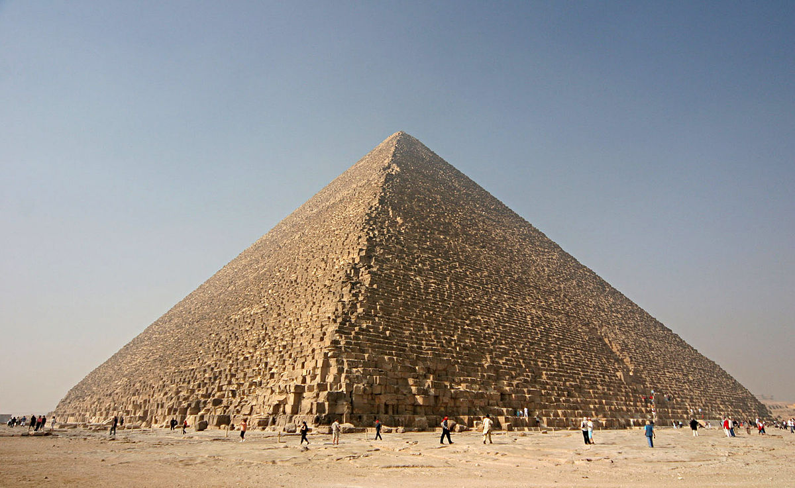
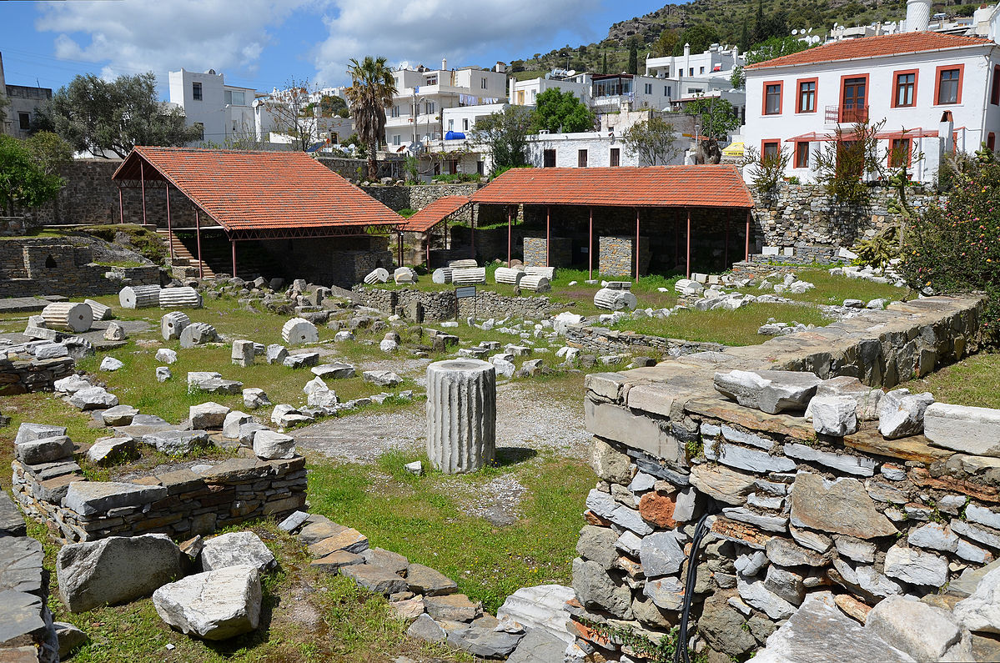
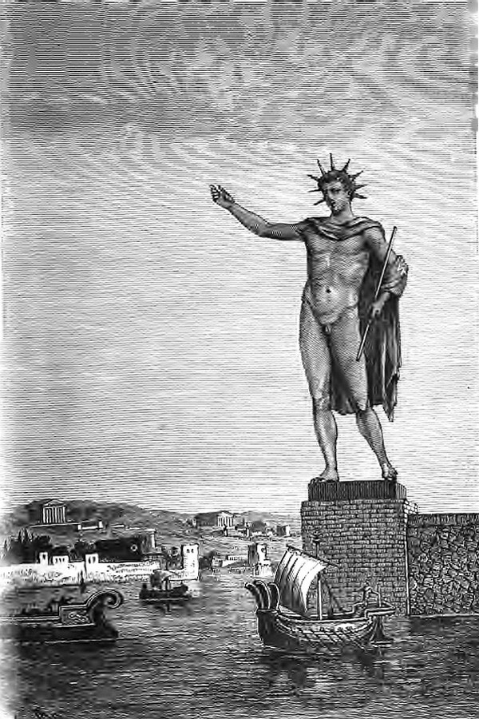
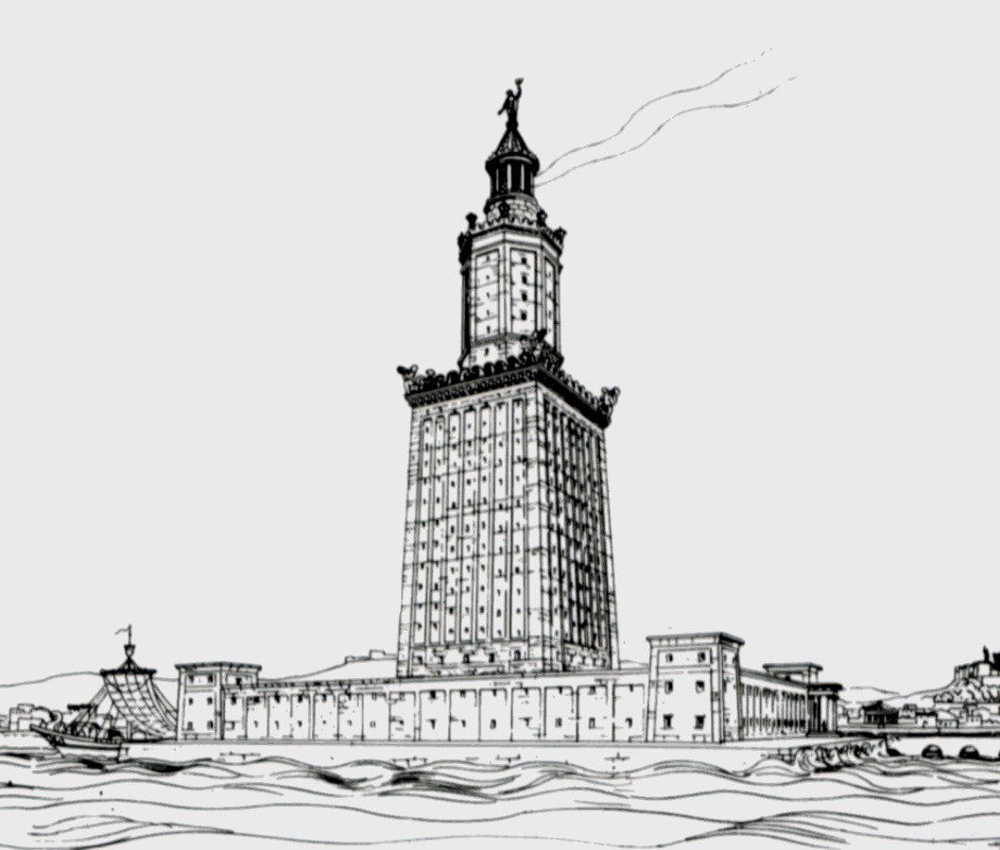

Great Pyramid of Giza

The Great Pyramid of Giza is the oldest and largest of the three pyramids in the Giza pyramid complex bordering what is now El Giza, Egypt. It is the oldest of the Seven Wonders of the Ancient World, and the only one to remain largely intact
Back to top
Hanging Gardens of Babylon

The Hanging Gardens of Babylon, one of the Seven Wonders of the Ancient World, is the only one whose location has not been definitively established.
The Hanging Gardens were described as a remarkable feat of engineering: an ascending series of tiered gardens containing all manner of trees, shrubs, and vines. The gardens were said to have looked like a large green mountain constructed of mud bricks.
Traditionally they were said to have been built in the ancient city of Babylon, near present-day Hillah, Babil province, in Iraq. The Babylonian priest Berossus, writing in about 290 BC and quoted later by Josephus, attributed the gardens to the Neo-Babylonian king Nebuchadnezzar II, who ruled between 605 and 562 BC. There are no extant Babylonian texts which mention the gardens, and no definitive archaeological evidence has been found in Babylon.
Back to top
Statue of Zeus at Olympia

The Statue of Zeus at Olympia was a giant seated figure, about 13 m (43 ft) tall, made by the Greek sculptor Phidias around 435 BC at the sanctuary of Olympia, Greece, and erected in the Temple of Zeus there. A sculpture of ivory plates and gold panels over a wooden framework, it represented the god Zeus sitting on an elaborate cedar wood throne ornamented with ebony, ivory, gold and precious stones. One of the Seven Wonders of the Ancient World, it was lost and destroyed during the 5th century AD with no copy ever being found, and details of its form are known only from ancient Greek descriptions and representations on coins.
Back to top
Temple of Artemis at Ephesus

The Temple of Artemis or Artemision, also known less precisely as the "Temple of Diana", was a Greek temple dedicated to the goddess Artemis. It was located in Ephesus. One of the Seven Wonders of the Ancient World, it was completely rebuilt three times before its final destruction in 401 AD. Only foundations and sculptural fragments of the latest of the temples at the site remain.
The first sanctuary (temenos) antedated the Ionic immigration by many years, and dates to the Bronze Age. Callimachus, in his Hymn to Artemis, attributed it to the Amazons. In the 7th century BC, the old temple was destroyed by a flood. Its reconstruction began around 550 BC, under the Cretan architect Chersiphron and his son Metagenes, at the expense of Croesus of Lydia: the project took 10 years to complete. The temple was destroyed in 356 BC by an act of arson and was again rebuilt, this time as the Wonder.
Back to top
Mausoleum at Halicarnassus

The Mausoleum at Halicarnassus was a tomb built between 353 and 350 BC at Halicarnassus (present Bodrum, Turkey) for Mausolus, a satrap in the Persian Empire, and his sister-wife Artemisia II of Caria. The structure was designed by the Greek architects Satyros and Pythius of Priene.
The Mausoleum was approximately 45 m (148 ft) in height, and the four sides were adorned with sculptural reliefs, each created by one of four Greek sculptors—Leochares, Bryaxis, Scopas of Paros and Timotheus. The finished structure of the mausoleum was considered to be such an aesthetic triumph that Antipater of Sidon identified it as one of his Seven Wonders of the Ancient World. It was destroyed by successive earthquakes from the 12th to the 15th century, the last surviving of the six destroyed wonders.
Back to top
Colossus of Rhodes

The Colossus of Rhodes was a statue of the Greek titan-god of the sun Helios, erected in the city of Rhodes, on the Greek island of the same name, by Chares of Lindos in 280 BC. One of the Seven Wonders of the Ancient World, it was constructed to celebrate Rhodes' victory over the ruler of Cyprus, Antigonus I Monophthalmus, whose son unsuccessfully besieged Rhodes in 305 BC. According to most contemporary descriptions, the Colossus stood approximately 70 cubits, or 33 metres (108 feet) high—the approximate height of the modern Statue of Liberty from feet to crown—making it the tallest statue of the ancient world. It was destroyed during the earthquake of 226 BC, and never rebuilt.
Back to top
Lighthouse of Alexandria

The Lighthouse of Alexandria was a lighthouse built by the Ptolemaic Kingdom between 280 and 247 BC which was between 120 and 137 m (394 and 449 ft) tall. One of the Seven Wonders of the Ancient World, for many centuries it was one of the tallest man-made structures in the world. Badly damaged by three earthquakes between AD 956 and 1323, it then became an abandoned ruin. It was the third longest surviving ancient wonder (after the Mausoleum at Halicarnassus and the extant Great Pyramid of Giza) until 1480, when the last of its remnant stones were used to build the Citadel of Qaitbay on the site. In 1994, French archaeologists discovered some remains of the lighthouse on the floor of Alexandria's Eastern Harbour. The Ministry of State of Antiquities in Egypt has planned, as of late 2015, to turn submerged ruins of ancient Alexandria, including those of the Pharos, into an underwater museum.